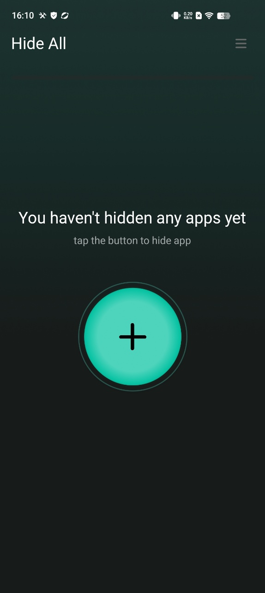
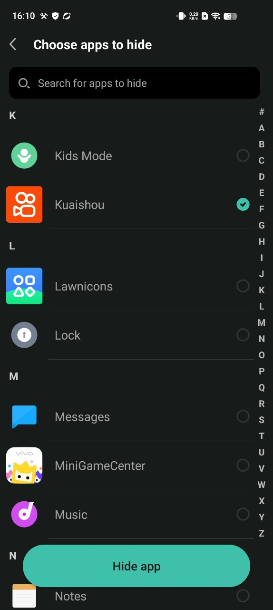
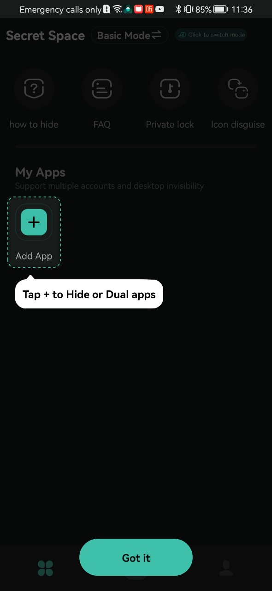

In this highly connected age, privacy protection for mobile apps has become a core user need. As a leading global smart device brand, Xiaomi offers a variety of practical features to meet user privacy management needs. This article will systematically explain the four methods for hiding apps on Xiaomi devices, and consider the differences in operations across different system versions to help users better manage their phone interface and data security.
1. Using "Hide App" feature
Hidden APPs is a function of the Xiaomi Smart phones that requires you to manually hide important private APPs or infrequently used and unnecessary APPs. It can hide applications from the Home screen and make them invisible on the Home screen to improve privacy and security. To hide APPs on the phone, please refer to the followings steps:
Step1：[Settings] >> [Privacy & security]

Step2：[Hide APPs]
Step3：Choose the APPs you want to hide.
To view hidden APPs on the phone, please refer to the following steps: Press and hold a blank area on the screen with two fingers and slide in the opposite direction to enter and view the hidden APPs.
Note:
- Hide certain private APPs (such as chat APPs, financial APPs, etc.) to prevent others from viewing your information without authorization;
- Hide infrequently used or unnecessary APPs to make your Home screen or APP list look cleaner and more organized;
- Hiding certain APPs can reduce the distraction of their notifications and allow you to focus more on important tasks.
2. Use app-hider apps to make private apps invisible
Here are two very useful apps: a launcher app and a sandbox app.
A. HideAll
HOW TO USE Hide All: calculator app lock to hide apps
a. One-tap on the homepage and select to hide apps.
b. When you open the app hide launcher the first time and select apps, it will ask you to set a second home screen. You only need to set it once.
Select "Hide All" as home screen to hide apps

c. You do not need to do extra work for hiding applications. Just select apps shown inside the HideAll. It automatically hides the apps as well.

d. To unhide the secret apps, long press the icon and Exit Hidden Mode.

e. Set a password and modify the Hide All appearance on the home screen to enhance privacy and security. You can change the icon of HIDE ALL, make it looks like an ordinary system calculator, and you can also use it to perform calculations.
B. Secret Space
Here IS how to use Secret Space to hide apps:
a. Click "+" on the homepage, select apps you want to hide and import:
add success:

b. Open the added app, click Launch Dual button on pop-up to ensure it can run normally

c. Return to the homepage and open the added app, choose the Hide button on pop-up to delete the original one to achieve the hidden effect

d. Using the "Icon disguise" function to display the icon of Secret Space as a calculator will better improve the hiding effect.

3. Using "Second Space" feature
a. To hide APPs on the phone, please refer to the followings steps:
Step1：[Settings] >> [Privacy & security]
Step2：Tap [Second space]
Step3：Turn on "Second space"
Step4：Set "Second space" password
Step5：In "Second space", download the app you want to hide from Mi store